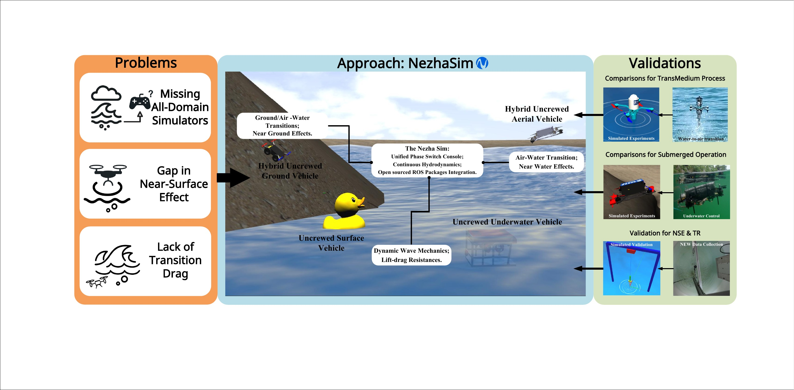

Tutorials
A checked quick path from first launch to an air–water transition, direct thruster
control, and force telemetry. The complete seven-part guide lives in
the source tutorials.
Each terminal must run source ~/nezha_ws/devel/setup.bash.
Tutorial 1 — Command a transmedium take-off
Spawn nezha_mini in the lake, start physics, and send the RotorS controller an explicit position setpoint above the waterline.
Launch the lake world
This brings up Gazebo with the lake, the spectral wave field and the vehicle at the surface.
roslaunch nezha_gazebo nezha_mini_lake.launch paused:=false
Publish the setpoint from Terminal B
rostopic pub -r 20 /nezha_mini/command/pose geometry_msgs/PoseStamped \
'{header: {frame_id: world}, pose: {position: {x: 0.0, y: 0.0, z: 2.0}, orientation: {w: 1.0}}}'
nezha_mini_takeoff.launch and
nezha_mini_wavetakeoff.launch are currently scene aliases; they do not run a
maneuver. The setpoint above causes the takeoff.Confirm the transition
rostopic echo /nezha_mini/ground_truth/pose rosservice call /nezha_mini/transmedia/get_phase_sample "{}"
Watch position.z cross the service's reported surface_z.
Tutorial 2 — Inspect the triple-domain Husky
Launch the composed ground, aerial, and underwater model, then inspect the interfaces it exposes.
Launch the all-domain Husky
roslaunch nezha_gazebo nezha_husky_UGV_UAV_UUV.launch
Other staged variants are available if you want to bring the domains up incrementally:
# ground only roslaunch nezha_gazebo nezha_husky_pure_UGV.launch # ground + air roslaunch nezha_gazebo nezha_husky_UGV_UAV.launch # full ground + air + underwater roslaunch nezha_gazebo nezha_husky.launch
Discover actuator and physics interfaces
rostopic list | grep -E 'nezha_husky|cmd_vel|thruster|command' rosservice list | grep -E 'nezha_husky|hydrodynamics|phase'
scenario_run.py targets nezha_mini and a hard-coded field-data file; it
is not a Husky mission driver and is intentionally not used here.
Compare staged variants
Repeat the discovery commands with the ground-only and ground+air launches above to see which interfaces each model composition adds.
Tutorial 3 — Direct underwater thruster control
Command the two surge thrusters, then read pose and hydrodynamic force telemetry.
Bring up an underwater world
roslaunch nezha_gazebo nezha_mini_lake.launch
Publish modest continuous setpoints
rostopic pub -r 10 /nezha_mini/thrusters/1/input uuv_gazebo_ros_plugins_msgs/FloatStamped "{data: 20.0}" & rostopic pub -r 10 /nezha_mini/thrusters/2/input uuv_gazebo_ros_plugins_msgs/FloatStamped "{data: 20.0}" &
Inspect and stop
rosservice call /nezha_mini/get_hydrodynamics_forces "{}" kill %1 %2
UUV_CONTROLV17.py expects an unshipped trajectory.csv, opens a Tk plot,
and runs repeated research trials; it is not a beginner rosrun command.
Tutorial 4 — Read force and phase telemetry
This source exposes transmedia drag as a ROS topic and the hydrodynamic decomposition and phase sample as ROS services.
List the decoupled wrench topics
rostopic list | grep -iE 'force|wrench|buoyan|drag|thrust' rosservice list | grep -iE 'force|hydro|phase'
Echo a single effect in real time
rostopic echo /nezha_mini/transmedia_drag rosservice call /nezha_mini/get_hydrodynamics_forces "{}" rosservice call /nezha_mini/transmedia/get_phase_sample "{}"
Plot or record the published topic
rosrun rqt_plot rqt_plot # add /nezha_mini/transmedia_drag/vector/z in the plot rosbag record -O takeoff_forces.bag /nezha_mini/transmedia_drag /nezha_mini/ground_truth/pose
Continue with the complete guide
The source guide also covers world/model selection, the Husky composition in more detail, and PX4 hardware-in-the-loop. Research gantry and mission scripts are kept in the source tree but are not presented as turnkey commands without their experiment-specific inputs.
Where to go next
- Architecture — how the PSC, LEAP and MT fit together.
- Robots & Worlds — the full catalogue of vehicles, worlds and plugins.
- Open an issue on GitHub if a launch file misbehaves.